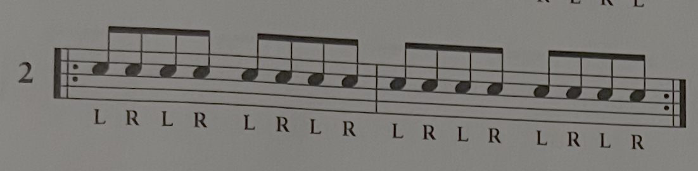

Music Theory for Intermediate Guitar Players
What is music theory?
Music theory is the language musicians use to think about music and to describe it to each other.
What are we going to cover?
The 12 Notes
Building Scales and Their Uses
Building Chords
Grouping Chords into Keys and Understanding Chord Progressions
The Notes in Music.
There are 12 notes in western music.
A note is simply a frequency that we have asssigned a name to.
These are the notes.
A, A#, B, C, C#, D, D#, E, F, F#, G, G# (# stands for sharp)
Notice there are no sharps between B and C or between E and F.
A, A#, B, C, C#, D, D#, E, F, F#, G, G#
The notes that have #'s (sharps) in them can also be referred to as b's (flats) but we will get into that later, for now just think of them as #s.
Every fret on the fretboard makes the sound of one of these 12 notes. We name each location on the fretboard by the sound that it makes. For example every green circle in the photo below makes a G sound. Some are in different octives but they all make a G. Take a look at this diagram and notice that all 12 notes are there. Grab your guitar and a tuner, play some notes, and see if they coorespond to this diagram. (If your guitar is tuned than they will)


Open strings are named after the note that we normally tune them to. For example if you play the low E string open it makes an E sound
Conclusion
There are 12 notes in music.
A, A#, B, C, C#, D, D#, E, F, F#, G, G#
Memorize Them.
To easily learn their locations on the fretboard see fretboard hack on page 2.
The Major Scale
What is a scale?
A scale is a formula that helps us group notes together.
The Major Scale
The Major scale is the scale that all of western music is based on. Pretty much all music theory traces it's roots back to the major scale.
The major scale is a seven note scale based on two different intervals (distances in music) half steps and whole steps, a half step is equal to one note. This means when you move over a half step you move over one fret (one note) and when you move over a whole step you move over two frets(two notes).
Photo showing this
Major Scale Formula
So I said a scale is a formula right? Well what is the formula for the Major scale?
The major scale Forumla is: W, W, H, W, W, W, H
Go to the scale Generator on page four and play around with some
Chords and ScalesHere is a diagram of one octive of the major scale on a guitar.
How to make major and minor chords.
How to make a major chord?
To make a major chord you need three notes, the 1st, 3rd, and 5th notes of the corresponding Major Scale.
For example the key of C is C, D, E, F, G, A, and B.
So a C major Chord contains C E and G.
An A major scale is A, B, C#, D, E, F#, and G#
So an A Major Chord contains A, C#, and E
How to make a minor chord.
To make a minor chord you do the same thing and flatten the third
So if an A major scale is A, B, C#, D, E, F#, and G#
An A Minor Chord contains A, C and E and a C minor Chord contains C Eb and G
Then show triads or the caged system to show how many different ways you can make a C chord and an A chord and an A minor chord
The caged system is just barre chords and its awesome
What are the chords in a key and how to find them.
If you want the simple answer here is it.
Take a major scale. Turn the 1st, 4th, and 5th, note into major chords, the 2nd, 3rd, and 6th notes minor chords, and the 7th note a diminished chord.
Example: the C major scale is C, D, E, F, G, A, and B.
The key of C major is C, Dminor, Eminor, F, G, Aminor and B diminished (when talking about chords if the quality is not specificed it is assumed that the chord is major, so if someone says D chord they mean a D major chord. Also diminished chords are signified with the degree symbol ° but diminished chords are rarely used so you dont really need to worry much about them.)
Why?
If you want to know why this is then here we go. Insert charts explaining all the notes in all the chords in a few keys ideally with an interactive diagram that walks you through it.
Other Concepts and Links To My Favorite Teachers
My favorite Guitar Lesson Subscription Site
Michael Palmisano's GuitargateMy Favorite Youtubers
Eric HaugenMichael Palmisano
Paul Davids
Desi Serna
Marty Shwarts